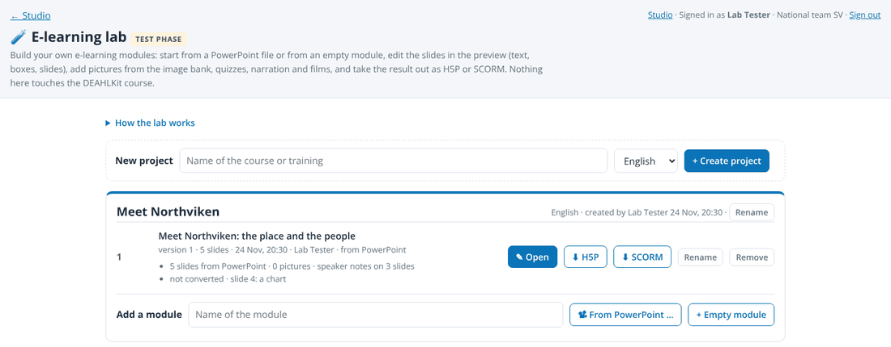
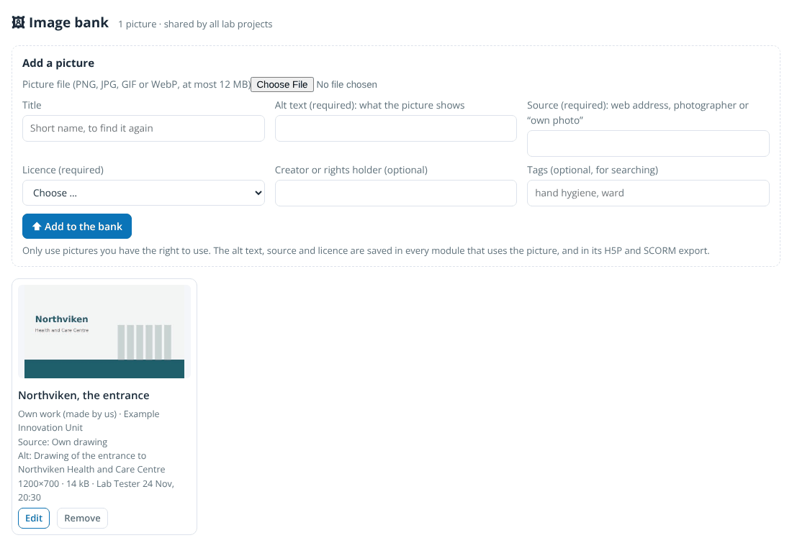

E-learning builder
The e-learning builder was made in DEAHLKit, to build new courses with the same engine as the course itself. It is being moved into the platform's shared layer, so that every project can build its own e-learning with it, during the projects and after they end.
Today it runs as the e-learning lab inside the DEAHLKit Studio. The pictures below are from the real lab, run with test accounts and a Northviken example: a PowerPoint turned into a module, and a picture saved with its source and licence.


- From PowerPoint: 5 slides, speaker notes on 3 of them
- Picture: from the image bank, with its source and licence
- Quiz: multiple choice, after this slide
- Narration: the speaker notes, read aloud
Export as H5PExport as SCORM
What it does
- From PowerPoint to an H5P draft: texts, lists, pictures and tables. The speaker notes go with it, for the author only.
- Edit slide by slide with the same tools as in DEAHLKit's course: move, resize, add and remove, with versions and undo.
- An image bank where every picture is saved with alt text, source and licence, and carried into the exports.
- Quizzes: multiple choice, true or false, question sets and drag the words.
- Narration, film and subtitles. The voice is your choice; DEAHLKit used ElevenLabs.
- Export as H5P or SCORM 1.2, for Moodle, Canvas, WordPress or any platform that takes them.
Use it with Northviken
Set your examples in the shared Northviken case universe. The people, rooms and scenes are ready, and each scene has a prompt for writing a film script. The figures and voices from DEAHLKit are examples you can choose to use; any other tool works just as well.
Meet Northviken How Northviken has been used
Status
Built and tested in the DEAHLKit Studio. Moving it into the shared layer, with the platform's sign-in and roles, is a later step.